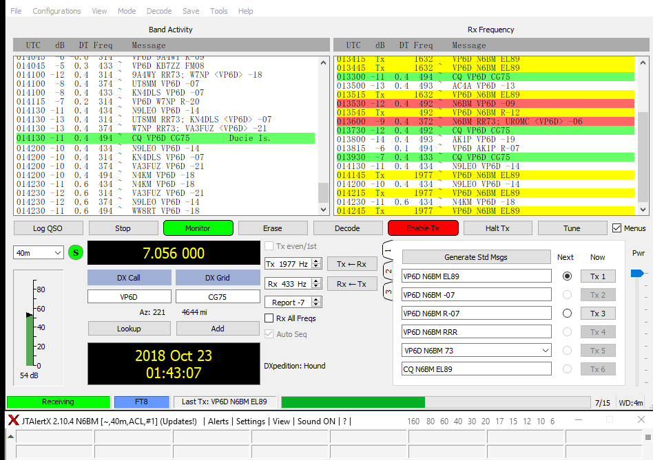

Hi Glenn,This is just a heads up that I just worked Chris on 40m FT8 and make you aware that DXA displayed my call as "N8BM" now being busted. I am in the process of making a duplicate QSO on this band. Other than that, just wanted you to be aware of this problem as it will be causing headaches after the DXpedition when the logging complaints come in.You guys are doing a great job....as a doner, I'm glad I'm making an ATNO.73 de Bill, N6BMFormer Secretary, NCDXC